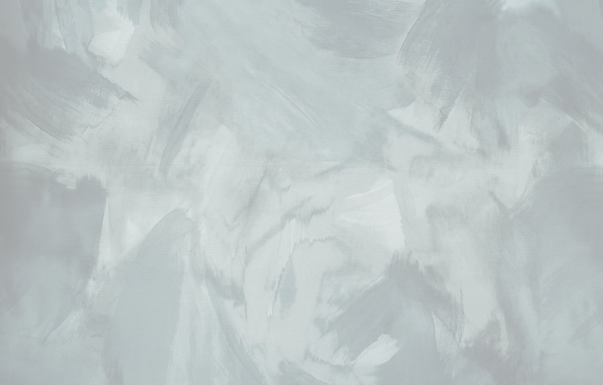

разработка и адаптивная верстка сайтов
Проекты
Сайты, которые начинались с макета
а закончились готовым интерфейсом

FAQ
Нет, разработка дизайна сайта не входит в мои услуги. Я специализируюсь на верстке и frontend/backend разработке по готовому дизайну.
Если у вас уже есть макет в Figma, готовый дизайн или подробное техническое задание с визуальной концепцией, я превращу его в полноценный работающий сайт.
При этом я могу подсказать, если какие-то элементы макета будут неудобны в реализации, плохо работать на мобильных устройствах или требовать другого технического решения.
Если дизайна пока нет, его необходимо подготовить самостоятельно или обратиться к дизайнеру. После этого я смогу заняться его реализацией.
В первую очередь нужен готовый дизайн или макет сайта. Чаще всего это макет в Figma.
Также понадобятся материалы, которые должны быть размещены на сайте: тексты, фотографии, логотип, иконки и другие необходимые файлы.
Если есть особые пожелания по функционалу, анимациям, формам, интеграциям или структуре сайта, их лучше обсудить заранее.
При этом необязательно заранее разбираться во всех технических деталях. Вы можете просто рассказать о своей задаче и показать то, что уже подготовлено, а я помогу определить, что понадобится для разработки.
Да. Адаптивность входит в разработку сайта.
Я настраиваю отображение страниц под разные размеры экранов, чтобы сайт корректно выглядел и работал не только на компьютере, но и на планшетах и смартфонах.
При адаптации учитываются размеры текста, изображения, кнопки, меню, отступы, сетка и другие элементы интерфейса.
После разработки сайт проверяется на разных разрешениях, чтобы основные элементы не съезжали, не обрезались и оставались удобными для использования.
Да. Сайт можно дорабатывать и после завершения основной разработки.
Можно изменить существующие блоки, добавить новые страницы, заменить контент, добавить анимации, изменить отдельные элементы или внести другие необходимые изменения.
Если речь идёт о небольших корректировках, их можно внести после завершения работы. Более крупные изменения, которых не было в первоначальной задаче, оцениваются отдельно в зависимости от их объёма.
Если сайт интегрирован с WordPress, часть содержимого можно будет изменять самостоятельно через административную панель.
Начать очень просто, просто расскажите мне о своей задаче.
Вы можете оставить заявку через форму на сайте, написать в личные сообщения на любой платформе, которая вам удобна, и указать, что хотите создать, есть ли у вас готовый дизайн и какой результат вам нужен.
После получения заявки я ознакомлюсь с информацией и свяжусь с вами, чтобы обсудить детали: количество страниц, необходимый функционал, материалы, сроки и другие особенности проекта.
Затем я оцениваю объём работы и сообщаю стоимость. Если условия подходят, согласовываем детали и начинаем разработку.
Необязательно иметь полностью готовое техническое задание. Достаточно рассказать о своей идее своими словами.
Мы вместе разберёмся, что потребуется для реализации.